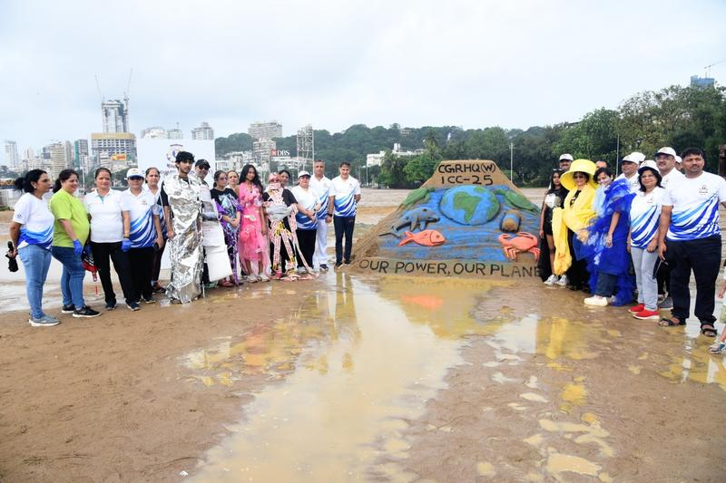
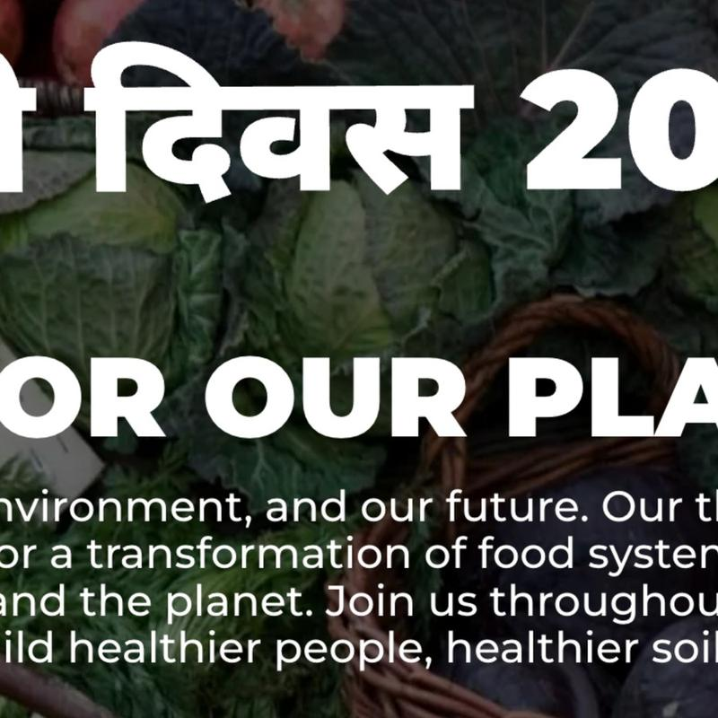
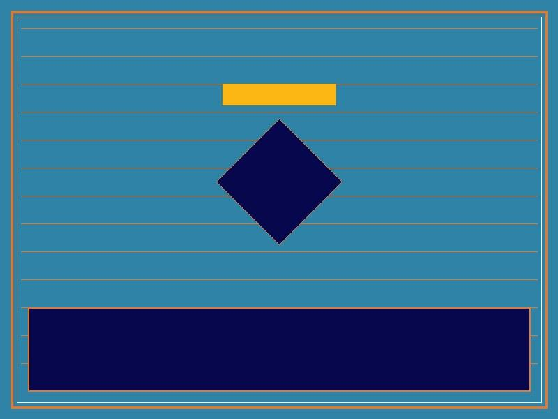
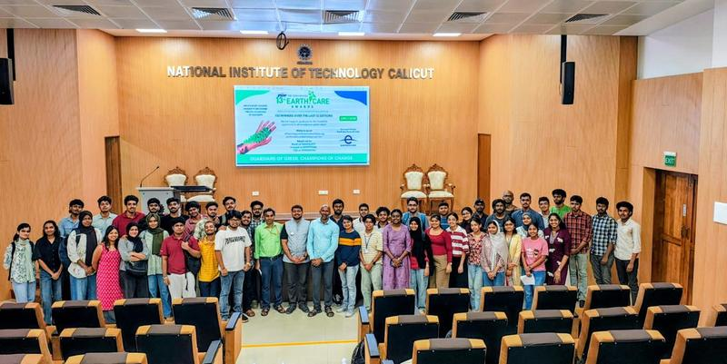
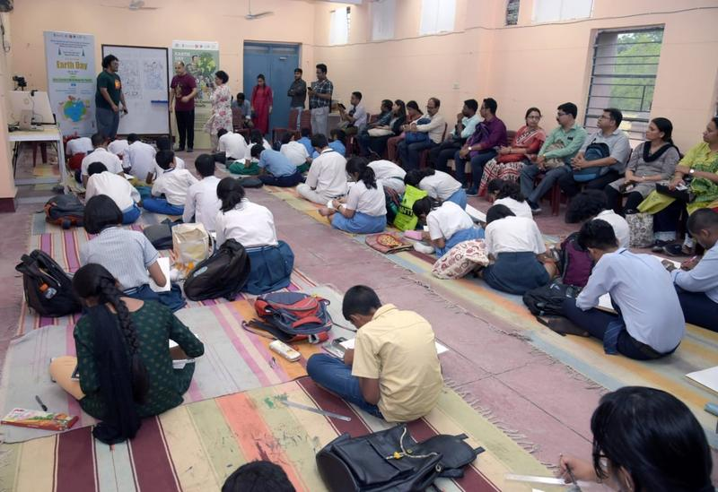
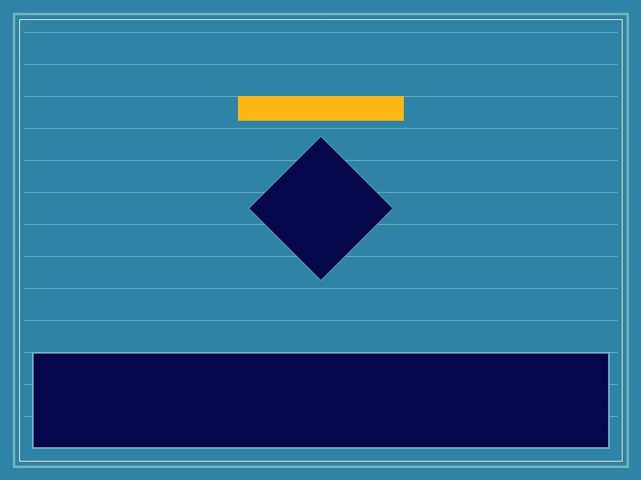
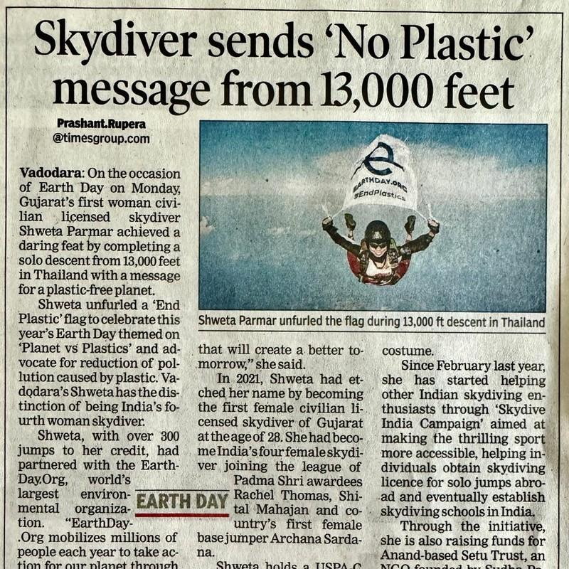
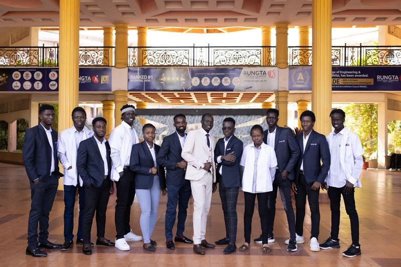

Events And Campaigns
Join upcoming gatherings, green cleanups and tree plantings mobilising communities across all Indian states.
Calendar & Activities
-
22Apr 2027

UpcomingRegister interestEarth Day 2027
Commemorated every year on April 22. Global theme: Food for Our Planet™ (opens in a new tab).
-
TBCDate

UpcomingRegister interestCleanup Day
Beach, lake and river cleanup drives across multiple states. Details to be announced.
-
OngoingActive

OngoingRegister interestYoung Climate Champions (YCC)
Part of the JSW–The Times of India Earth Care Awards, reaching college youth across India.
-
2025Archive

Past eventRegister interestNational Climate Assemblies
Student assemblies uniting educators and students across 1,00,000+ schools.
-
2024Archive

Past eventRegister interestGanga River Basin Cleanups
Community waste cleanups from Devprayag to Ganga Sagar.
-
PressCoverage

In NewsRegister interestNational Press & Television Features
Coverage of Earth Day Network India initiatives, Energy Swaraj Yatra, and Morning Assembly broadcasts.
Ongoing
Young Climate Champions (YCC)
Young Climate Champions, part of the JSW–The Times of India Earth Care Awards, encourages college students to develop practical, innovative, and scalable solutions to environmental challenges.
Empowering Youth
EDN in Media
Press coverage of Earth Day Network India.
- Date TBC
Publication · Headline placeholder
Coverage summary and link to be supplied.
- Date TBC
Publication · Headline placeholder
Coverage summary and link to be supplied.
- Date TBC
Publication · Headline placeholder
Coverage summary and link to be supplied.
- Date TBC
Publication · Headline placeholder
Coverage summary and link to be supplied.
- Date TBC
Publication · Headline placeholder
Coverage summary and link to be supplied.